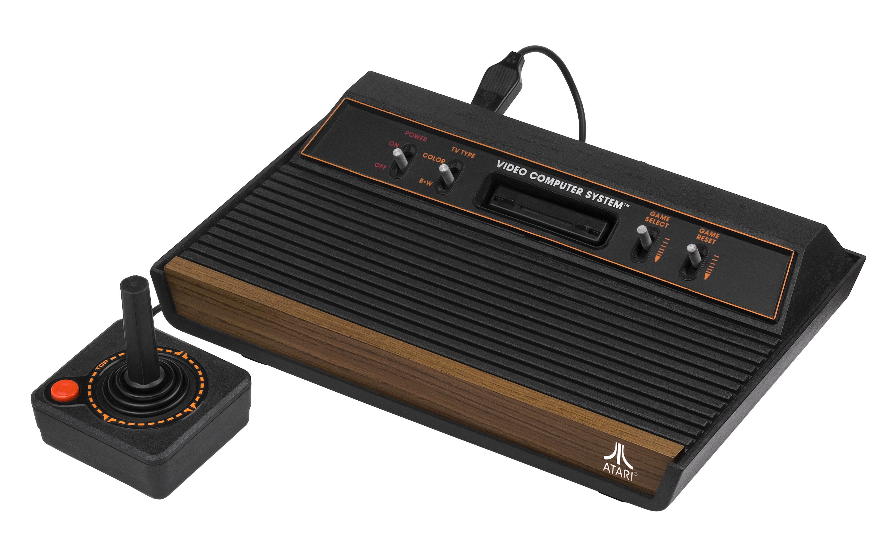

Evolution of AI

1980s: The Age of the Script
A world of "If-Then" logic where the computer was a puppet on a string.

1990s: Getting Clever with 3D
Finite State Machines gave enemies a "state of mind" for the first time.

2000s: The Era of Suggestion
AI became a personal curator, predicting behavior through big data.
Today: The AI Brain
Generative Intelligence.